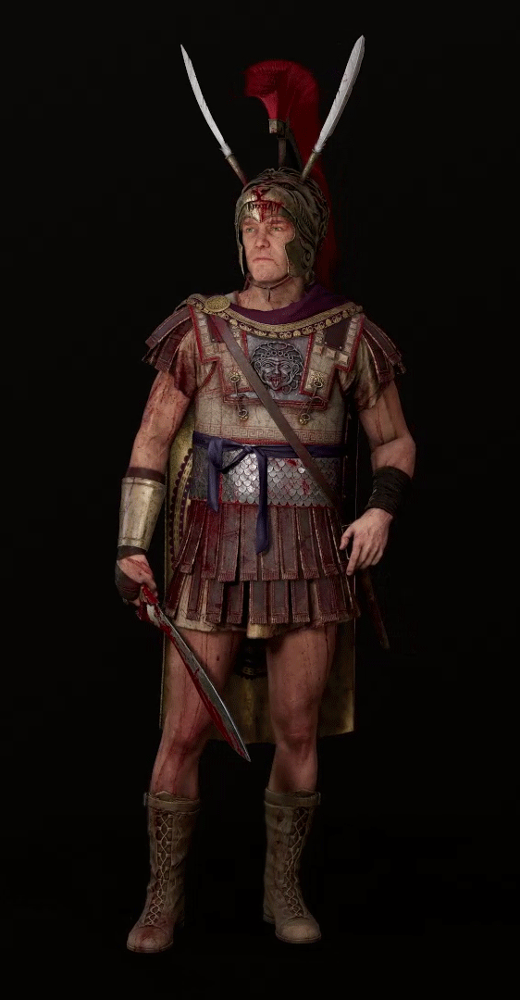
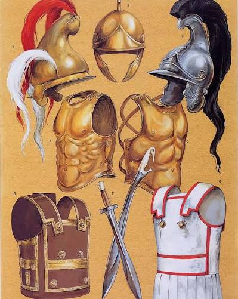

Male and female labels describe representative player contributors, not alternate genders of the named historical figures. Within a gender progression the contributor remains recognizable as the role develops. Historical appearances, settings and incidental objects remain imaginative game art. Original paintings and exact prompts are preserved.